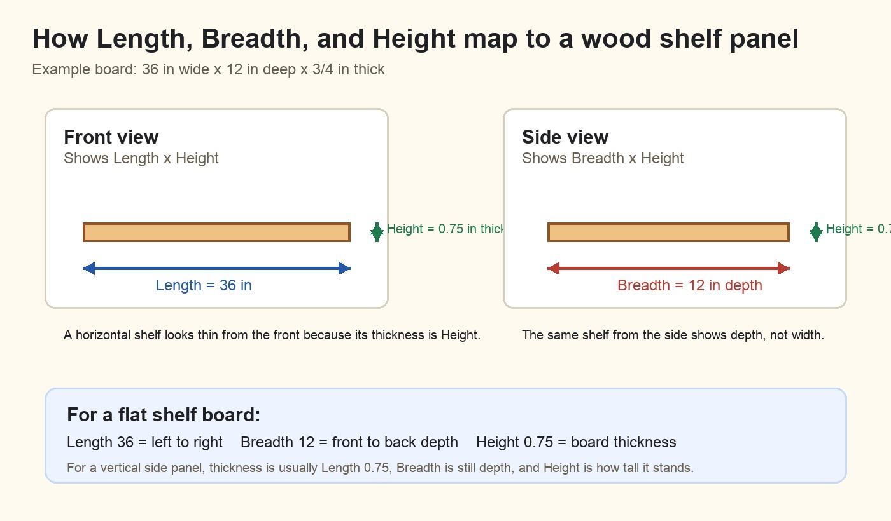

This tool helps scouts and adult leaders turn a simple wood project idea into a 3D model and a cut list.
Use the tool here:
/Users/paramraghavan/dev/beginners-3d-modelling/drag_drop_wood_modeler.htmlRecommended way to open it:
cd /Users/paramraghavan/dev/beginners-3d-modelling
python3 -m http.server 8766Then open:
http://127.0.0.1:8766/drag_drop_wood_modeler.htmlFor most projects, do not draw from scratch first.
Use this beginner workflow:
Model library.Load model.Length, Breadth, or
Height.Apply dimensions.Add cleats underAdd sag bar under frontAdd base skids underExport 3D HTML when the model is ready.Drawing from scratch is useful later, after the user understands how one part is sized and positioned.
The screen has four main areas.
| Area | What It Is For |
|---|---|
| Top toolbar | Opens this user guide and reminds the user of the main workflow. |
| Left panel | Load models, edit the selected part, add supports, review parts, and export. |
| Middle panel | 2D front and side drawings. Use these to see Length, Breadth, and Height. |
| Right panel | Live 3D preview with floor, wall, top guide, and X/Y/Z axis cues. |
Every wood piece is a rectangular part.

| Field | Meaning | Easy Way To Think About It |
|---|---|---|
Length |
Left-to-right size | How wide the board looks from the front |
Breadth |
Front-to-back depth | How deep the board goes into the project |
Height |
Bottom-to-top size | How tall or thick the part is |
X left |
Left position | Where the part starts from the left |
Z back |
Depth position | Where the part starts front-to-back |
Y bottom |
Bottom position | How high the part starts above the floor |
All measurements are in inches.
For a flat shelf board, thickness is usually Height, not
Breadth.
Example:
Length: 36
Breadth: 12
Height: 0.75This means the shelf is 36 inches wide, 12 inches deep, and 3/4 inch thick.
For a vertical side panel, thickness is often
Length.
Example:
Length: 0.75
Breadth: 12
Height: 24This means the side panel is 3/4 inch thick, 12 inches deep, and 24 inches tall.
The tool has two 2D views because a wood project has both width and depth.
| View | Shows | Use It For |
|---|---|---|
Front view |
Length x Height |
Shelves, sides, table legs, fronts, dividers |
Side view |
Breadth x Height |
Depth, side panels, how far shelves run front-to-back |
When you draw in Front view, the new part uses the
rectangle for Length x Height. It starts with the default
Breadth value shown above the drawing area. Select the part
and set Breadth to the real front-to-back depth.
Example for a shelf panel:
Draw in Front view: 36 wide x 0.75 high
Then set Breadth: 12
Final part: 36 Length x 12 Breadth x 0.75 HeightWhen you draw in Side view, the new part uses the side
drawing for Breadth x Height. Then set Length
in the selected part editor.
Example for a side panel:
Draw in Side view: 12 deep x 24 high
Then set Length: 0.75
Final part: 0.75 Length x 12 Breadth x 24 HeightThe 3D preview helps check whether the project makes physical sense.
| Cue | Meaning |
|---|---|
| Red X | Length, left-to-right |
| Green Y | Height, floor-to-top |
| Blue Z | Breadth, front-to-back |
| Tan plane | Floor or ground |
| Blue wall planes | Side/back wall reference |
| Yellow top guide | Project top or ceiling clearance |
If a part touches the tan floor plane, it is sitting on the ground. For cubbies, shelves, and boxes with skids, usually only the skids should touch the floor.
To move the 3D view:
| Action | Mouse Or Trackpad |
|---|---|
| Rotate | Drag inside the 3D preview |
| Zoom | Scroll wheel or trackpad scroll |
| Pan | Right-drag, or two-finger drag on some trackpads |
Rotating the view does not change the wood model. It only changes the camera angle so you can inspect the front, side, back, top, and underside.
Goal: load Storage cubbies, make it wider, add a second
divider, and check the floor skids.
Model library, choose
Storage cubbies.Load model.Select Top panel.
Set:
Length: 60
Breadth: 15
Height: 0.75
X left: 0
Z back: 0
Y bottom: 35.25Click Apply dimensions.
Select Bottom panel.
Set:
Length: 60
Breadth: 15
Height: 0.75
X left: 0
Z back: 0
Y bottom: 1.5Click Apply dimensions.
Select Middle horizontal shelf.
Set:
Length: 60Click Apply dimensions.
Select Right side.
Set:
X left: 59.25
Y bottom: 2.25Click Apply dimensions.
Select Center vertical divider.
Click Duplicate.
Rename the copy:
Second vertical dividerSet:
X left: 40
Y bottom: 2.25Click Apply dimensions.
Select Back panel.
Set:
Length: 60Click Apply dimensions.
Select Base skid right.
Set:
X left: 54.5
Y bottom: 0Click Apply dimensions.
Select Bottom panel.
Click Add sag bar under front if the widened bottom
panel needs more support.
Review the cut list. It should show the wider panels and the new divider.
Check these values before building:
| Part Type | Correct Floor Position |
|---|---|
| Base skids | Y bottom: 0 |
| Bottom plywood | Y bottom: 1.5 |
| Side panels and dividers | Y bottom: 2.25 |
Goal: make a simple 36 inch wide, 12 inch deep, 12 inch tall tabletop shelf.
Start blank.Draw board.Front view.Draw a long rectangle near the bottom.
Select the new part and set:
Name: Bottom panel
Length: 36
Breadth: 12
Height: 0.75
X left: 0
Z back: 0
Y bottom: 0
Material: PlywoodClick Apply dimensions.
The part may look thin in 3D until Breadth is set to
12.
Click Duplicate.
Set:
Name: Top panel
Length: 36
Breadth: 12
Height: 0.75
X left: 0
Z back: 0
Y bottom: 12
Material: PlywoodClick Apply dimensions.
Select Bottom panel.
Click Duplicate.
Set:
Name: Left side panel
Length: 0.75
Breadth: 12
Height: 12
X left: 0
Z back: 0
Y bottom: 0.75
Material: PlywoodClick Apply dimensions.
Click Duplicate.
Set:
Name: Right side panel
Length: 0.75
Breadth: 12
Height: 12
X left: 35.25
Z back: 0
Y bottom: 0.75
Material: PlywoodClick Apply dimensions.
Select Bottom panel or Top panel.
Use one of these:
| Button | When To Use |
|---|---|
Add cleats under |
To support plywood along the left and right edges |
Add sag bar under front |
To stiffen a long shelf edge |
Add base skids under |
To keep a floor shelf or cubby off the ground |
For a tabletop shelf, skids may not be needed. For a floor shelf, add skids under the bottom panel.
Front view.Side view.Export 3D HTML.The support buttons work only when the selected part looks like a plywood shelf, top, bottom, deck, or panel.
| Button | What It Adds |
|---|---|
Add cleats under |
Two narrow cleats under the plywood edges |
Add sag bar under front |
A stiff front bar to reduce sag |
Add base skids under |
Three base skids under a bottom panel |
If the buttons are disabled, select a plywood shelf/top/bottom/panel first.
Before cutting wood, check these items:
Breadth?Y bottom: 0?This tool is a planning aid. Review the final design with an adult woodworker before buying lumber or cutting parts.